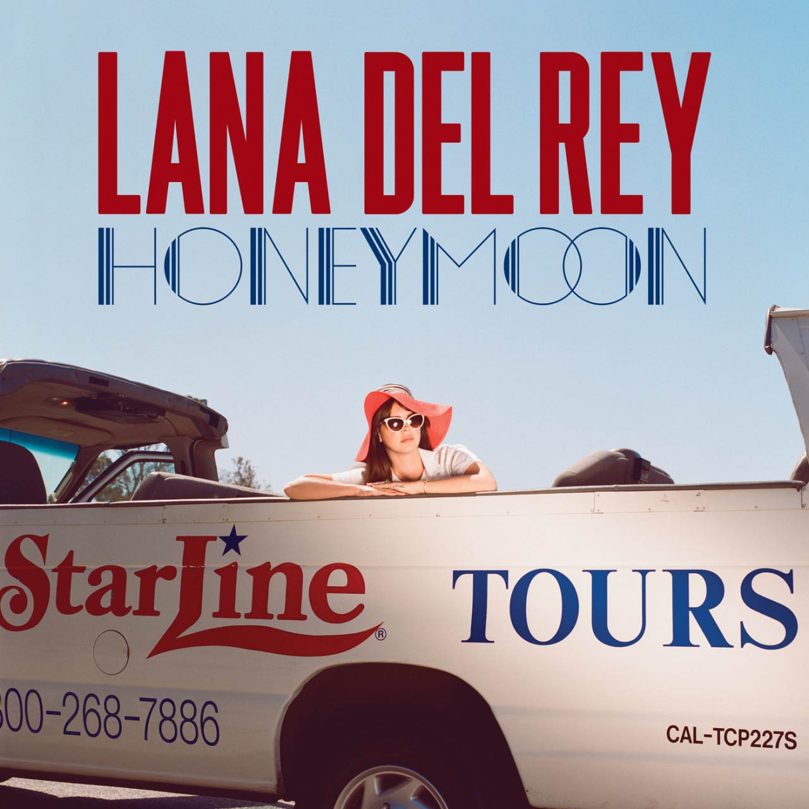

¿Quién es?
Elizabeth Woolridge Grant (Nueva York, 21 de junio de 1985), conocida artísticamente como Lana Del Rey, es una cantante, compositora, modelo, actriz, escritora, productora y poetisa estadounidense.
Biografía
Lana Del Rey creció en Lake Placid, una pequeña localidad en el estado de Nueva York. Su familia era de clase media; su padre era un exitoso empresario y su madre trabajaba como profesora. Desde joven, Lana mostró interés en la música y comenzó a cantar en coros y en el escenario local. Se mudó a la ciudad de Nueva York para estudiar en la Universidad de Fordham y se dedicó a la música, adoptando el nombre artístico Lana Del Rey en 2011. Su temprano enfoque en la música y su estilo distintivo la llevaron a destacarse en la escena musical.
Vida artística
Del Rey ha lanzado un total de 9 álbumes desde el año 2011, siendo "Born to Die" su álbum más conocido mundialmente. A continuación, se especificarán más detalles sobre los discos de la cantante.
Born to Die

"Born to Die" es considerado uno de los álbumes más influyentes de la década de 2010. Sus líricas, la estética vintage y el sonido han sido la inspiración para grandes estrellas del pop como Taylor Swift, Billie Eilish, Lorde, Melanie Martínez, Bad Bunny, Halsey, entre otros. La Recording Academy en 2022 señaló que "Born to Die", "diez años después, ha pasado de empujar los límites a marcar tendencias dentro de la música y la cultura. [Del Rey] ha permitido que el pop sea triste, lo ha impulsado hacia su futuro de hip-hop y sensibilidades orquestales, y ha creado poderosas imágenes tan conmovedoras como memorables". Billboard incluyó la canción "Born to Die" en su lista de Canciones que definieron la década y la calificó de "uno de los momentos musicales más destacados del álbum".
Canciones más conocidas del disco
Ultraviolence
Después del lanzamiento de "Born to Die" en 2012, Del Rey había rechazado la idea de lanzar un nuevo material discográfico, ya que según ella «ya había dicho todo lo que [ella] quería decir». Sin embargo, en febrero de 2013, comenzó a trabajar en un nuevo álbum, mencionando: «Es un poco minimalista, pero todavía cinematográfico y oscuro […] He estado trabajando en él muy despacio, pero me encanta todo lo que he hecho. He estado escribiendo en Santa Mónica, California, y sé cómo suena el disco. Ahora sólo tengo que terminarlo». Mencionó que una de las canciones del álbum se llamaría «Black Beauty», cuya versión demo fue filtrada en Internet en julio de 2013.
Canciones más conocidas del disco
Honeymoon
Descrito como cinematográfico, Honeymoon, es un álbum de género Alternative,con influencias de jazz o trap, mientras que su instrumentación está compuesta por guitarras, sintetizadores, mellotrón, el saxofón y efectos electrónicos.